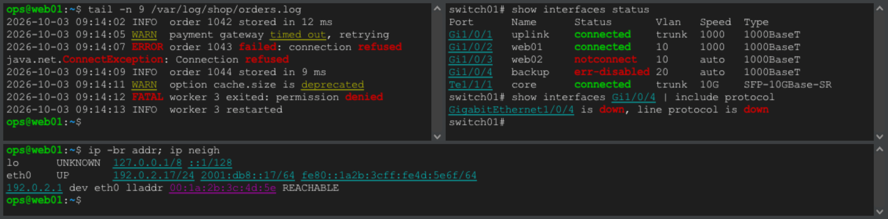

Hervorhebung von Schlüsselwörtern¶
korTTY kann Wörter und Muster in der Terminalausgabe färben, sobald sie eintreffen – Fehler in Rot, Warnungen unterstrichen, IP- und MAC-Adressen, Schnittstellennamen und Link-Zustände auf Netzwerkgeräten –, sodass die wichtigen Zeilen hervorstechen, während die Ausgabe vorbeiläuft. Die Hervorhebung ändert nur, wie der Text aussieht: Was der Server gesendet hat, was Sie kopieren, das Terminalprotokoll und was die KI-Funktionen lesen, bleibt genau gleich.
Die Hervorhebung ist ausgeschaltet, bis Sie sie einschalten: für einen Bereich über ein Menü oder das Tastenkürzel, für jedes Terminal einer Verbindung mit dem Regelsatz der Verbindung oder für jeden Bereich mit einem Standard-Regelsatz. Jeder Terminalbereich zeigt höchstens einen Regelsatz gleichzeitig. korTTY liefert drei Regelsätze mit, und Sie können eigene anlegen.
Mitgelieferte Regelsätze¶
| Regelsatz | Was er markiert |
|---|---|
| Fehler und Warnungen | error, failed, failure, fatal, critical, denied, refused, panic, exception, traceback und segmentation fault fett in Rot; Namen von Exception-Klassen wie NullPointerException oder ValueError in Rot; warning, deprecated und timed out unterstrichen in Gelb. Die Wörter werden nur als ganze Wörter und unabhängig von Groß-/Kleinschreibung erkannt, daher wird ERROR: markiert, terror aber nicht. |
| Netzwerkadressen | IPv4-Adressen mit optionaler Präfixlänge (10.0.0.1/24), IPv6-Adressen einschließlich verkürzter Schreibweisen (fe80::1%eth0) und MAC-Adressen mit Doppelpunkten, Bindestrichen oder in der Punktschreibweise von Cisco (aabb.ccdd.eeff), alle unterstrichen. Zahlen, die nur wie eine Adresse aussehen, etwa 999.1.1.1, bleiben unberührt. |
| Netzwerkgeräte | Link- und Sitzungszustände auf Switches und Routern: down, err-disabled, notconnect, administratively down, inactive und Ähnliches fett in Rot, up, connected, established und forwarding fett in Grün sowie Schnittstellennamen, wie Cisco, Arista und Juniper sie ausgeben (Gi0/1, TenGigabitEthernet1/0/1, Eth1/2, xe-0/0/0, ae0), unterstrichen in Cyan. |
Die mitgelieferten Regelsätze verwenden die ANSI-Farben des Themas und folgen damit Ihren Farbeinstellungen und den Farben jeder Verbindung. Jede Regel stellt ihren Text außerdem fett oder unterstrichen dar, sodass ein Treffer auch für farbenblinde Menschen und in einem einfarbigen Thema hervorsticht.

Hervorhebung ein- und ausschalten¶
Die Hervorhebung gilt pro Bereich: In einem geteilten Tab kann jeder Bereich einen anderen Regelsatz zeigen, und ein neu geteilter Bereich übernimmt einen Regelsatz, der für den Bereich gewählt wurde, aus dem er geteilt wurde; ohne eine solche Wahl folgt er seiner eigenen Verbindung.
- Tastatur: Ctrl+Shift+H (Cmd+Shift+H auf macOS) schaltet die Hervorhebung für den Bereich mit dem Tastaturfokus ein oder aus. Beim Wiedereinschalten kehrt der Regelsatz zurück, den dieser Bereich zuletzt gezeigt hat; ein Bereich, der noch nie einen gezeigt hat, beginnt mit dem Regelsatz seiner Verbindung oder dem Standard-Regelsatz oder, wenn es keinen von beiden gibt, mit Fehler und Warnungen. Die Statusleiste nennt den Regelsatz, der jetzt eingeschaltet ist.
- Ansicht → Hervorhebung: Hervorhebung ein wirkt wie das Tastenkürzel. Darunter wählen Sie Keine oder einen Regelsatz für den fokussierten Bereich des aktiven Tabs.
- Terminal-Kontextmenü: Klicken Sie mit der rechten Maustaste auf einen Bereich und öffnen Sie Hervorhebung; dort finden Sie dieselben Einträge, angewendet auf den angeklickten Bereich. Das Untermenü ist auch vorhanden, wenn Terminal-Effekte ausgeschaltet sind.
Beide Menüs listen Ihre eigenen Regelsätze unter den mitgelieferten auf und enden mit Regelsätze verwalten…, das den Regelsatz-Editor mit dem Regelsatz öffnet, den der Bereich zeigt.
Note
Ein Regelsatz, den Sie in diesen Menüs oder mit dem Tastenkürzel wählen, gilt nur für die laufende Sitzung und wird nicht gespeichert: Der nächste Tab, den Sie für dieselbe Verbindung öffnen, beginnt mit dem Regelsatz der Verbindung oder, falls sie keinen hat, mit dem Standard-Regelsatz, der Keiner ist, sofern Sie in den Einstellungen keinen gewählt haben. Um einen Regelsatz für eine Verbindung dauerhaft festzulegen, wählen Sie ihn im Verbindungseditor. Das unterscheidet sich von Ansicht → Terminal-Effekt, das den Effekt in der Verbindung speichert.
Das Tastenkürzel funktioniert auch bei ausgeblendeter Menüleiste und im Nur-Terminal-Vollbildmodus. Unter Windows und Linux behält korTTY Ctrl+Shift+H für sich, sodass es das Programm im Terminal nicht erreicht; ein einfaches Ctrl+H erreicht die Shell weiterhin als Rücktaste.
Standard-Regelsatz und Einstellungen¶
Der Abschnitt Hervorhebung von Schlüsselwörtern unter Konfiguration → Globale Einstellungen → Terminal enthält drei Einstellungen, die für jeden Bereich gelten; Einzelheiten finden Sie unter Terminal-Einstellungen.
| Einstellung | Standard | Wirkung |
|---|---|---|
| Schlüsselwörter in der Terminalausgabe hervorheben | Ein | Der Hauptschalter. Ausgeschaltet wird kein Bereich hervorgehoben, gleich was irgendwo gewählt wurde; die Hervorhebungsmenüs sind ausgegraut, und das Tastenkürzel zeigt nur einen Hinweis in der Statusleiste. |
| Auch in Vollbildprogrammen hervorheben (vim, less, htop) | Aus | Hebt auch in Programmen hervor, die den alternativen Bildschirm verwenden. |
| Standard-Regelsatz | Keiner | Der Regelsatz, den jeder Bereich zeigt, sofern weder seine Verbindung noch der Bereich selbst einen eigenen hat. Wählen Sie hier einen Regelsatz, damit die Hervorhebung in jedem neuen und geöffneten Terminal eingeschaltet ist. |
Für einen Bereich gilt das Erste, was davon zutrifft:
- der für diesen Bereich in einem Menü oder mit dem Tastenkürzel gewählte Regelsatz, einschließlich Keine;
- der Regelsatz der Verbindung, einschließlich Keiner;
- der Standard-Regelsatz;
- keine Hervorhebung.
Ein Regelsatz, der nicht mehr existiert, wird übersprungen, sodass die nächste Stufe entscheidet. Beim Speichern der Einstellungen wechselt jeder geöffnete Bereich zu dem Regelsatz, der sich jetzt für ihn ergibt, sodass ein neuer Standard sofort in jedem Bereich erscheint, für den weder seine Verbindung noch der Bereich selbst eine eigene Wahl hat.
Regelsatz pro Verbindung¶
Eine Verbindung kann einen eigenen Regelsatz haben, zum Beispiel Netzwerkgeräte für Ihre Switches und Router und Fehler und Warnungen für Anwendungsserver. Öffnen Sie die Verbindung im Connection-Manager, wechseln Sie zur Registerkarte Terminal-Einstellungen und wählen Sie den Regelsatz unter Hervorhebung von Schlüsselwörtern im Abschnitt Terminal-Verhalten:
| Auswahl | Was die Terminals der Verbindung zeigen |
|---|---|
| Standard verwenden (…) | Den Standard-Regelsatz; der Eintrag nennt den Regelsatz, den der Standard gerade zeigt. Neue und bestehende Verbindungen beginnen mit dieser Auswahl. |
| Keiner (keine Hervorhebung für diese Verbindung) | Keine Hervorhebung, gleich welcher Standard-Regelsatz eingestellt ist. |
| Ein mitgelieferter oder ein eigener Regelsatz | Diesen Regelsatz, in jedem Bereich der Verbindung. |
- Der Abschnitt gilt unabhängig davon, ob die Verbindung eigene Terminal-Einstellungen verwendet, und bleibt erhalten, wenn Terminal-Effekte ausgeschaltet sind. Solange der Hauptschalter unter Einstellungen → Terminal ausgeschaltet ist, weist der Abschnitt darauf hin, und es wird kein Regelsatz angezeigt.
- Beim Speichern im Connection-Manager wechseln die geöffneten Bereiche dieser Verbindung in jedem Fenster sofort zum neuen Regelsatz. Ein Bereich mit einem im Menü oder per Tastenkürzel gewählten Regelsatz behält diese Wahl, bis Sie sie dort ändern.
- Tabs, die aus der gespeicherten Verbindung über Schnellverbindung, Duplizieren oder ein Projekt geöffnet werden, verwenden ihren Regelsatz. Ein Bereich, der mit Rechts teilen (neue Verbindung) oder Unten teilen (neue Verbindung) geöffnet wurde, folgt der Verbindung, mit der er geöffnet wurde, es sei denn, er hat einen Regelsatz übernommen, der für den Bereich gewählt war, aus dem er geteilt wurde.
- Die Auswahl wird mit der Verbindung in
connections.xmlgespeichert und bleibt beim Duplizieren, Exportieren und Importieren erhalten; ein Export enthält nur die ID des Regelsatzes, nie seine Regeln. Ein Regelsatz, der nicht mehr existiert – weil Sie ihn gelöscht haben oder weil die Verbindung auf einem anderen Computer exportiert wurde oder aus einer gemeinsam genutzten Teamarbeit-Datei stammt –, wird im Dropdown als Fehlender Regelsatz angezeigt, und die Bereiche der Verbindung folgen dem Standard-Regelsatz, bis Sie einen anderen wählen. Die mitgelieferten Regelsätze haben auf jedem Computer dieselbe ID.
Ihre eigenen Regelsätze¶
Der Regelsatz-Editor legt Ihre eigenen Regelsätze an und ändert sie. Öffnen Sie ihn über Ansicht → Hervorhebung → Regelsätze verwalten…, mit Regelsätze verwalten… im Kontext-Untermenü Hervorhebung eines Bereichs oder mit Regeln bearbeiten… neben dem Standard-Regelsatz unter Konfiguration → Globale Einstellungen → Terminal.

- Regelsätze links listet die mitgelieferten Regelsätze, markiert als mitgeliefert, und danach Ihre eigenen. Die mitgelieferten Regelsätze sind schreibgeschützt, Sie können aber einen auswählen, um seine Muster zu lesen. Duplizieren kopiert den ausgewählten Regelsatz, ob mitgeliefert oder eigen, in einen neuen Regelsatz, den Sie ändern können; Neu beginnt einen leeren Regelsatz mit einer Regel zum Ausfüllen, und Löschen entfernt einen Ihrer Regelsätze.
- Name des Regelsatzes ist der Name, den die Menüs und das Dropdown für den Standard-Regelsatz anzeigen.
- Regeln listet die Regeln des Regelsatzes in Prioritätsreihenfolge auf: Treffen zwei Regeln denselben Text, gewinnt die obere, wie bei den mitgelieferten Regelsätzen. Mit ▲ und ▼ ändern Sie die Reihenfolge, mit Regel hinzufügen fügen Sie unter der ausgewählten Regel eine neue ein, und mit Regel entfernen löschen Sie sie. Über die Spalte Ein schalten Sie eine Regel aus, ohne sie zu löschen. Muster zeigt jedes Muster in dem Aussehen, das es erzeugt, Gilt für, ob es den gefundenen Text oder die ganze Zeile färbt, Treffer, wie viele Stellen es im Testtext darunter hervorhebt, und Prüfung, ob etwas damit nicht stimmt.
- Unterhalb der Tabelle bearbeiten Sie die ausgewählte Regel. Muster ist ein Wort oder eine Wortfolge, die gesucht wird, oder ein regulärer Ausdruck in Java-Syntax, wenn Regulärer Ausdruck eingeschaltet ist. Groß-/Kleinschreibung ignorieren behandelt Groß- und Kleinbuchstaben gleich, und Ganzes Wort trifft nur dort, wo der Treffer nicht Teil eines längeren Wortes ist, sodass
errorzwarERROR:markiert, aber nichtterror. Gilt für färbt entweder den Gefundenen Text oder die Ganze Zeile, automatisch umbrochene Zeilen eingeschlossen. - Textfarbe und Hintergrund sind Unverändert (die eigene Farbe des Programms), eine der 16 Themenfarben oder Eigene Farbe mit einer Farbauswahl. Themenfarben folgen Ihren Farbeinstellungen und den Farben jeder Verbindung, wie bei den mitgelieferten Regelsätzen; eine eigene Farbe bleibt überall gleich. Stil fügt Fett, Kursiv oder Unterstrichen hinzu. Eine Regel braucht mindestens eine Farbe oder einen Stil.
Der Testtext unten beginnt mit Beispielzeilen aus einem Protokoll und von einem Netzwerkgerät; ersetzen Sie ihn durch eigene Ausgabe. Vorschau zeigt ihn so, wie ein Terminalbereich ihn zeigen würde, mit derselben Trefferlogik, derselben Regelreihenfolge und demselben Zeitlimit, und folgt jeder Änderung, während Sie tippen. Der Editor behält Ihren Testtext, bis korTTY beendet wird; er wird nicht gespeichert.
Prüfung zeigt Ungültig für eine Regel, die nicht funktionieren kann, Aus für eine Regel, die Sie ausgeschaltet haben, Langsam für eine Regel, die auf einer Zeile des Testtexts mehr als die Hälfte ihres Zeitlimits brauchte, und Zu langsam für eine Regel, die dort ihr Zeitlimit überschritten hat und auf dieser Zeile nichts hervorhebt; ein Terminalbereich schaltet eine solche Regel aus, sobald sie auf drei Zeilen ihr Zeitlimit überschritten hat (siehe Grenzen). Fahren Sie mit der Maus über das Wort oder wählen Sie die Regel aus, um die Erklärung zu sehen. Solange eine Regel oder ein Regelsatz ein Problem hat, ist OK deaktiviert, und die Zeile über den Schaltflächen nennt das erste, zum Beispiel ein fehlendes Muster, einen regulären Ausdruck, der sich nicht kompilieren lässt, oder ein Muster wie a*, das auch auf leeren Text passt.
OK speichert Ihre Regelsätze sofort in global-settings.xml und wechselt jeden geöffneten Bereich zu seinem aktualisierten Regelsatz; Abbrechen verwirft alle Änderungen. Wenn Sie den Regelsatz löschen, der Ihr Standard-Regelsatz ist, wird der Standard wieder auf Keiner gesetzt. Ein Bereich, der einen gelöschten Regelsatz zeigte, fällt auf die nächste Stufe zurück: den Regelsatz seiner Verbindung, sonst den Standard-Regelsatz.
Tip
Um einen mitgelieferten Regelsatz anzupassen, wählen Sie ihn aus, klicken Sie auf Duplizieren und ändern Sie die Kopie. Die mitgelieferten Regelsätze selbst bleiben so, wie korTTY sie ausliefert, damit eine spätere Version ihre Muster verbessern kann.
Verhalten der Hervorhebung¶
- Neue Ausgabe wird kurz nach ihrem Erscheinen (etwa 50 ms) in einem Hintergrund-Thread hervorgehoben, sodass ein schnelles
catoder ein mitgelesenes Protokoll seine Geschwindigkeit behält. - Ein Treffer kann über eine automatisch umbrochene Zeile hinweg weitergehen, und Muster erkennen auch breite Zeichen wie CJK-Text und Emoji.
- Die Wahl eines anderen Regelsatzes oder von Keine färbt den Bildschirm sofort neu und den Scrollback schrittweise, die neuesten Zeilen zuerst. Keine stellt überall die ursprünglichen Farben wieder her.
- Vollbildprogramme wie
vim,lessundhtopwerden nicht hervorgehoben, es sei denn, Sie erlauben es in den Einstellungen: Sie zeichnen ihren Bildschirm ständig neu und bringen eigene Farben mit, sodass Hervorhebungen flackern und mit diesen Farben kollidieren würden. - Wenn die Ausgabe schneller hereinströmt, als sie geprüft werden kann, bleiben Zeilen, die mehr als 10.000 Zeilen über dem unteren Rand liegen, unverändert.
- Text, den ein Programm als verborgen markiert, bleibt verborgen, und Links behalten ihren eigenen Stil.
- Hervorhebungen erscheinen auch bei Verbindungen, deren Terminalfarben ausgeschaltet sind, und sie sind in Terminalaufnahmen zu sehen, weil sie Teil dessen sind, was der Bereich zeigt.
- Solange die Suchleiste Ergebnisse anzeigt, wartet korTTY nach einem Wechsel des Regelsatzes mit dem Neufärben des Scrollbacks, damit die Treffer, die Sie gerade betrachten, markiert bleiben. Eine Zeile, die bei geöffneter Suchleiste hervorgehoben wird, kann ihre Suchmarkierung verlieren; suchen Sie erneut, um sie zurückzuholen.
Grenzen¶
Jede Regel erhält höchstens 2 ms pro Ausgabezeile. Eine Regel, die dreimal ihr Zeitlimit überschreitet – meist ein regulärer Ausdruck mit übermäßigem Backtracking –, wird für diesen Bereich ausgeschaltet, bis Sie erneut einen Regelsatz wählen. Eine Zeile wird einschließlich ihrer automatisch umbrochenen Fortsetzungen bis zu ihren ersten 8.192 Zeichen geprüft. Die Spalte Prüfung des Editors warnt vor langsamen Regeln, bevor sie ein Terminal erreichen.
Sie können bis zu 32 Regelsätze mit jeweils bis zu 64 Regeln anlegen, und ein Muster darf bis zu 512 Zeichen lang sein.
Sicherheit und Datenschutz¶
Warning
Eine Hervorhebung ist kein Vertrauenssignal. Der Server bestimmt, was er ausgibt; er kann also Text ausgeben, der auf eine Regel passt, genauso wie er seine eigene Ausgabe einfärben kann. Die Hervorhebung ändert nie, was gesendet oder empfangen wird.
Regelsätze bleiben auf Ihrem Computer, in global-settings.xml (siehe Konfigurationsdateien), und das Protokoll nennt Regeln und Regelsätze nur über ihre IDs, nie über ihre Muster oder den Text, auf den sie gepasst haben. Wenn Sie anonyme Nutzungsstatistiken erlaubt haben, meldet korTTY, welcher mitgelieferte Regelsatz eingeschaltet wurde (jeder eigene Regelsatz zählt nur als „custom“), ob dies über ein Menü, mit dem Tastenkürzel, über den Regelsatz der Verbindung oder über den Standard-Regelsatz geschah und welche der drei Einstellungen Sie geändert haben, wobei der Standard-Regelsatz wieder nur als mitgelieferter Regelsatz, „custom“ oder „none“ gemeldet wird – nie Muster, Namen von Regelsätzen oder Terminaltext.